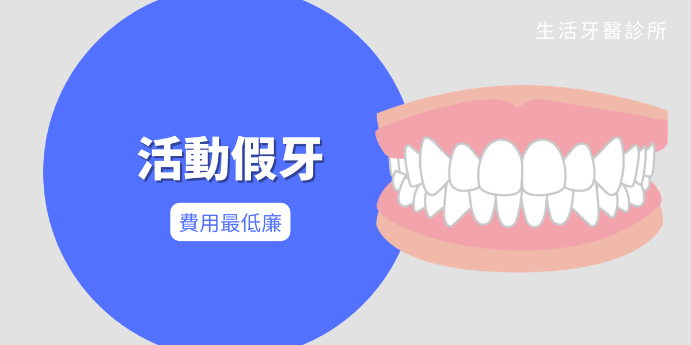
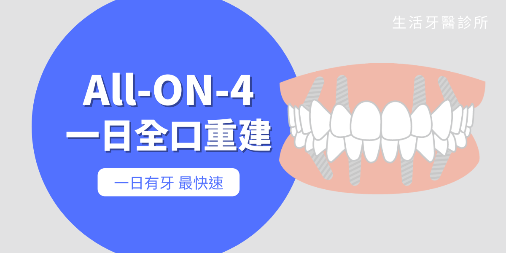
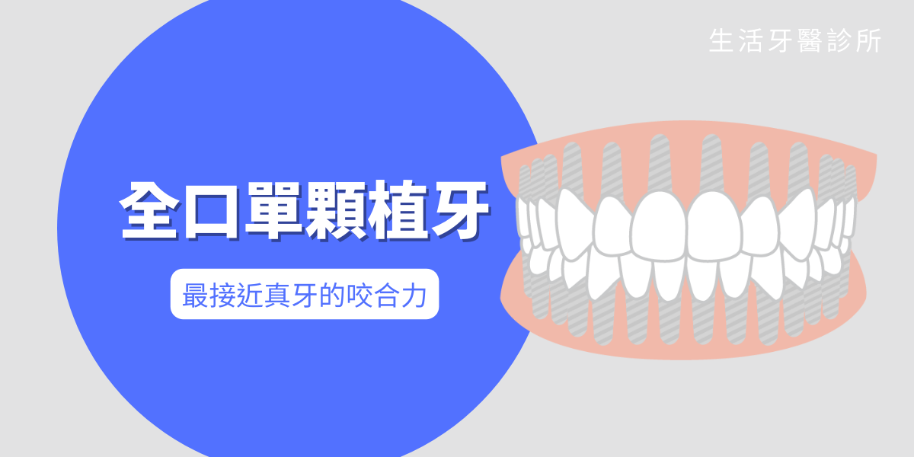

在全口無牙或多顆缺牙的狀況下，大家第一個想到的贋復方法都是「活動假牙」，的確過往在科技的侷限下，活動假牙是最簡便也最經濟實惠的解決方法，只是活動假牙的體積龐大，裝在嘴裡容易有異物感， 加上咬合力會施加在牙骨上，導致咀嚼疼痛，因此許多人常常在製作後卻因為不舒服而不願配戴活動假牙。此外，根據研究數據指出，活動假牙平均使用年限約只有為五年，這是由於牙骨少了牙根支撐會不停流失，活動假牙形狀與萎縮的牙床密合度變低，影響配戴時的咬合力和舒適度，所以需要定期回診調整，甚至重新製作新假牙。


那麼，除了活動假牙。還有沒有其他的全口重建選擇呢？接下來就為各位介紹其他兩種方式。
All-On-4 一日全口重建
在牙骨上植入4-6根植體，再鎖上一整排固定假牙，一天即可完成手術、當天馬上有牙。利用類似斜張橋的力學原理，讓少少植體就能擁有約真牙八成的咀嚼力。
All-On-4最大的優點是療程快速，一天即能有牙，不必擔心沒有牙齒的尷尬空窗期，加上其特殊角度設計，不需要補牙骨也能直接植牙，能免去補骨手術費用以及癒合時間。此外，搭配上生活牙醫的3D數位模擬技術，你可以在術前就看到未來的模擬外觀和牙齒，不怕成果與想像有落差。
在手術過程中，生活牙醫將請特聘麻醉醫師施予舒眠麻醉，並全程監控確保安全，讓手術像一場淺淺的好夢，一覺醒來就完成了，所以特別適合容易緊張或害怕看牙的人。

傳統全口單顆植牙
植入與缺牙數等同數量的植牙，用多顆植牙取代真牙，是咬合力最高的重建方法。
傳統全口單顆植牙最大的優點是咬合力高，是所有重建方式中咀嚼力最好的，但同時，也需要較嚴苛的牙骨條件才能施行，所以在進行植牙前通常都得先施行補骨手術，等待骨頭充足後再依序植牙，所以需要耗費較多的時間與費用。

由於每個人的口腔條件和需求都不同，所以贋復方法沒有絕對的好壞，只有適不適合， 假如你或長輩有全口重建的需求，建議先至院所進行諮詢，讓專科醫師臨床評估最適合的方法，才能夠事半功倍。